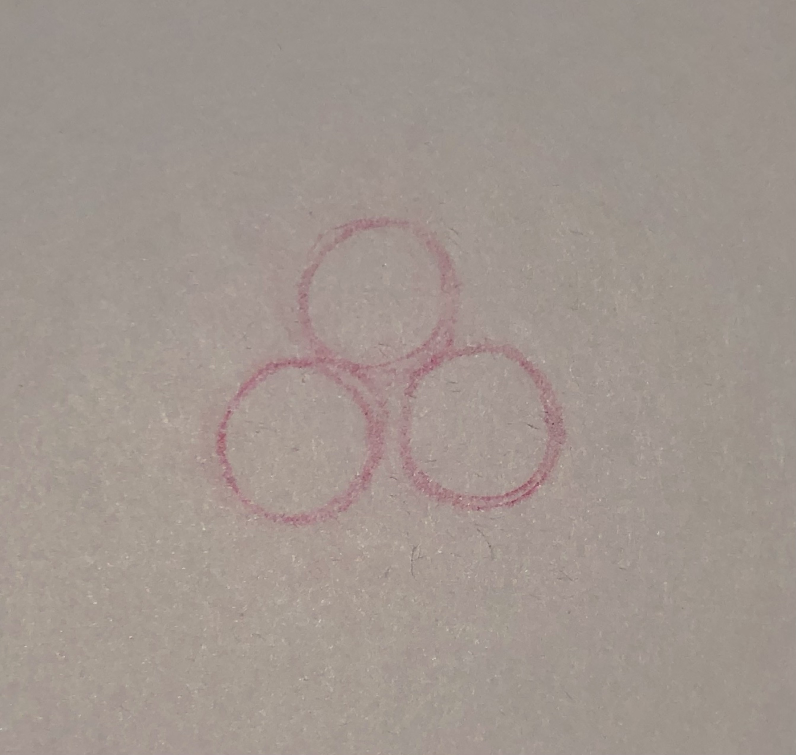
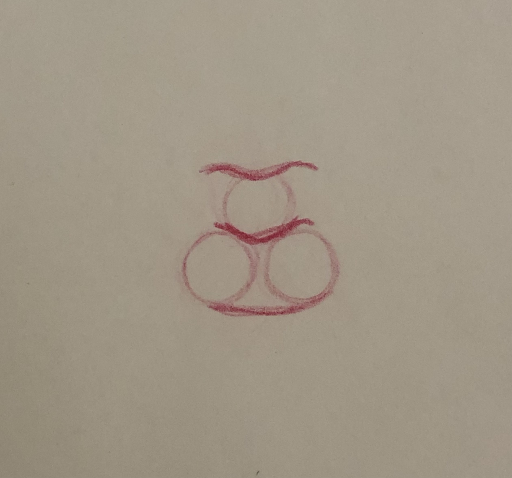
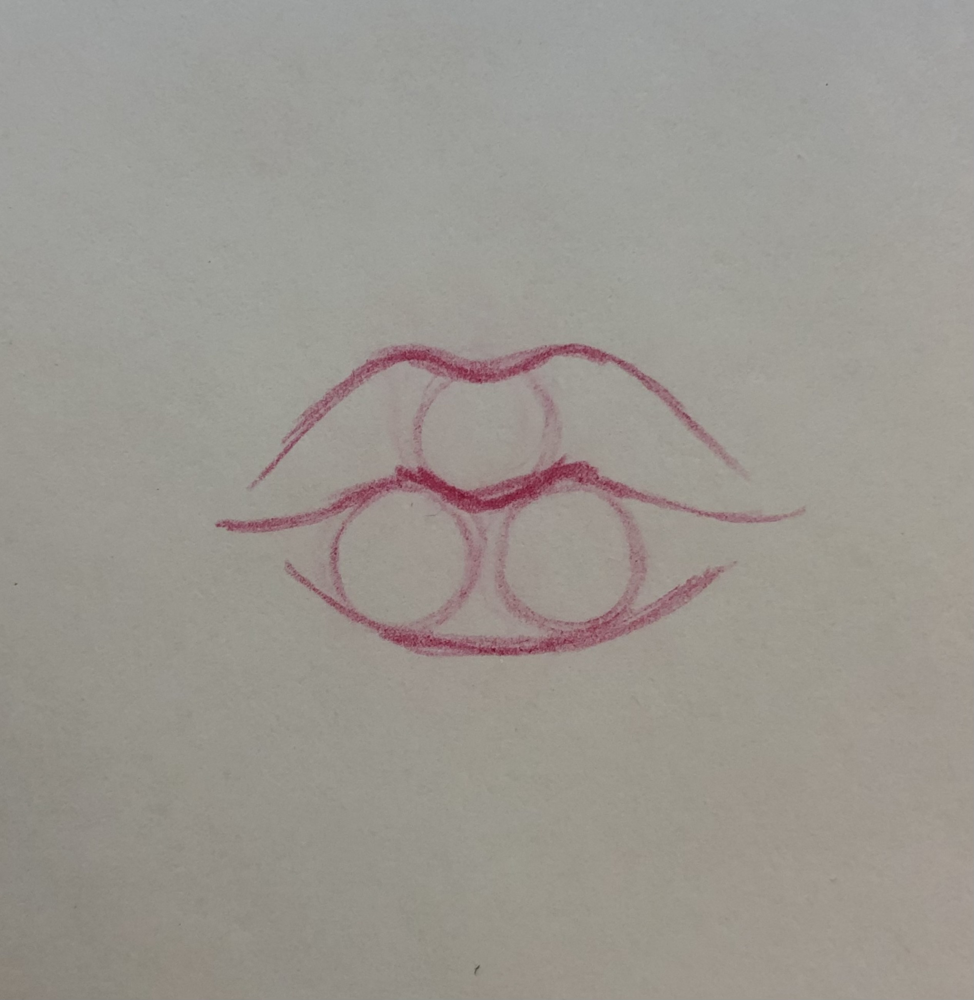
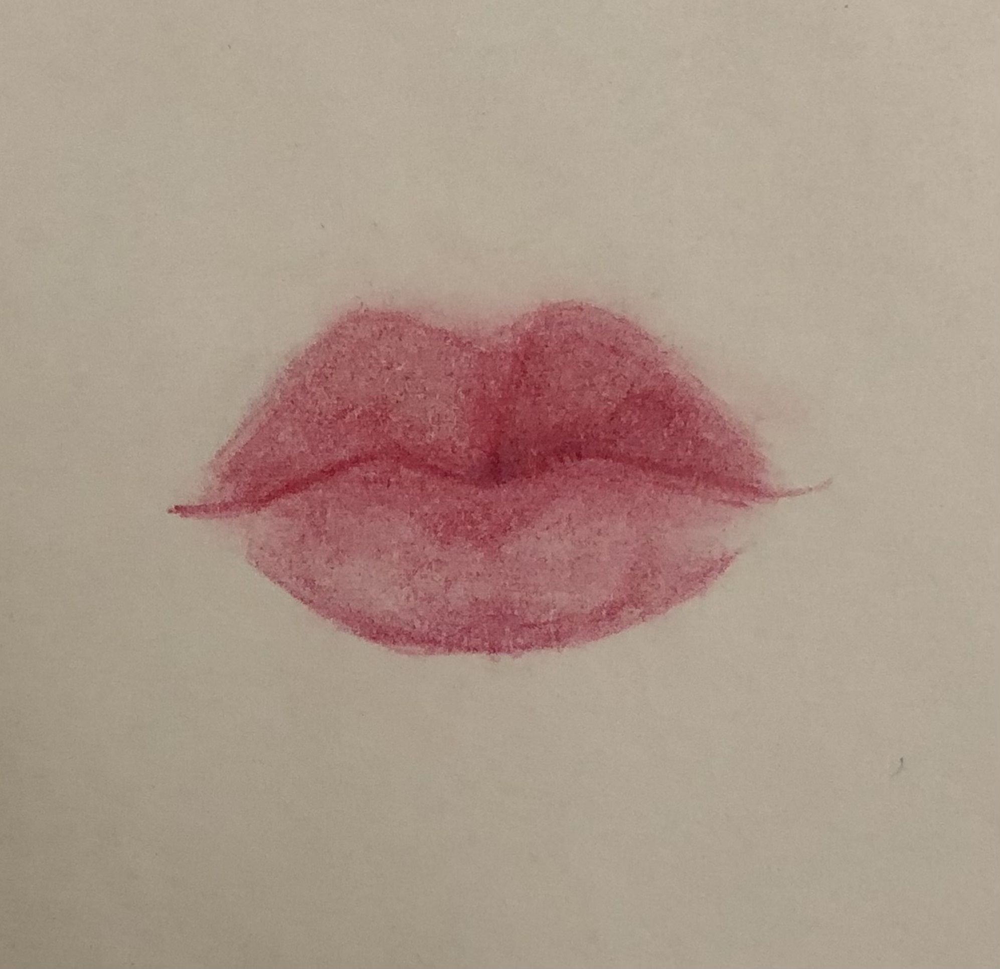
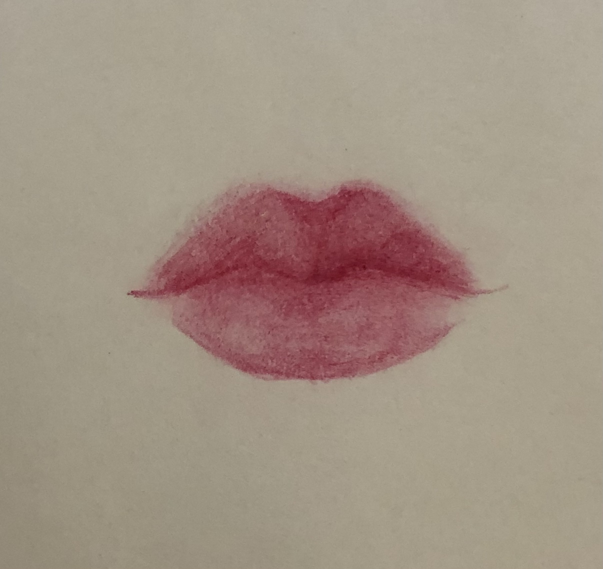
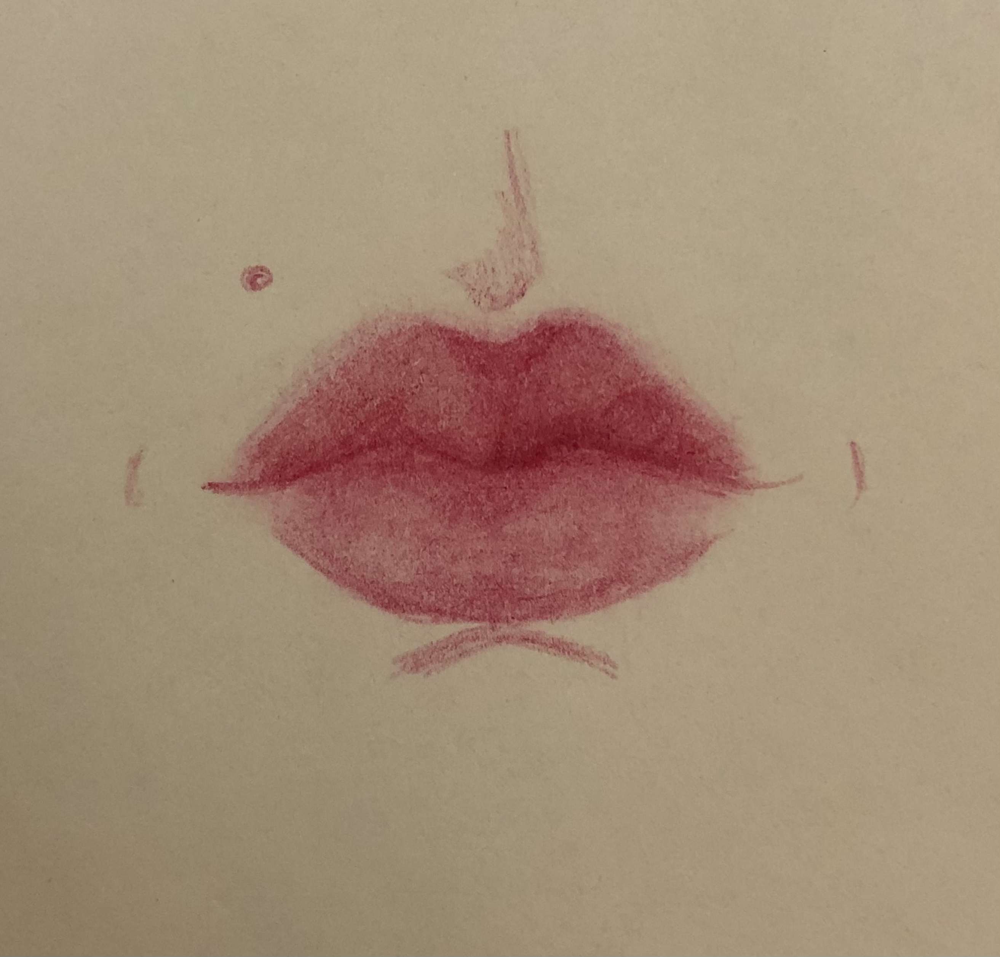

- Несильно нажимая на карандаш, сделайте три кружка, соответствующие размеру губ, которые вы хотите нарисовать.
- Сверху и снизу одиночного кружка нарисуйте закругленные "галочки", а нижние кружки соедините дугой.
- Продлите дуги до очертания желаемых губ.
- Закрасьте губы, сделав верхние немного темнее и добавив тень от нее на нижнюю губу.
- В зависимости от вашего референса добавьте необходимые тени.
- Теперь осталось лишь добавить детали!
- Нажми на смайлик и найдешь много референсев!





